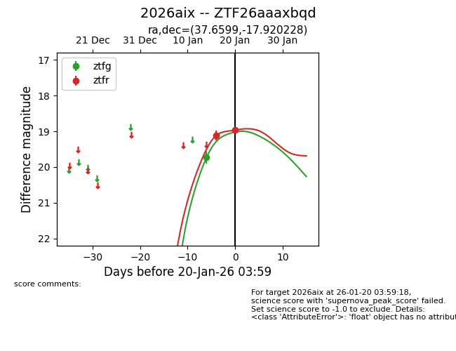
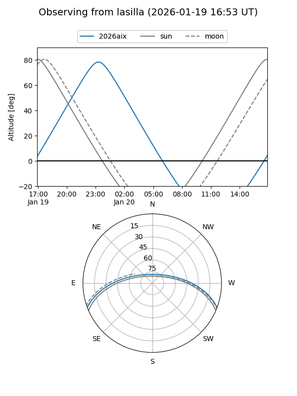
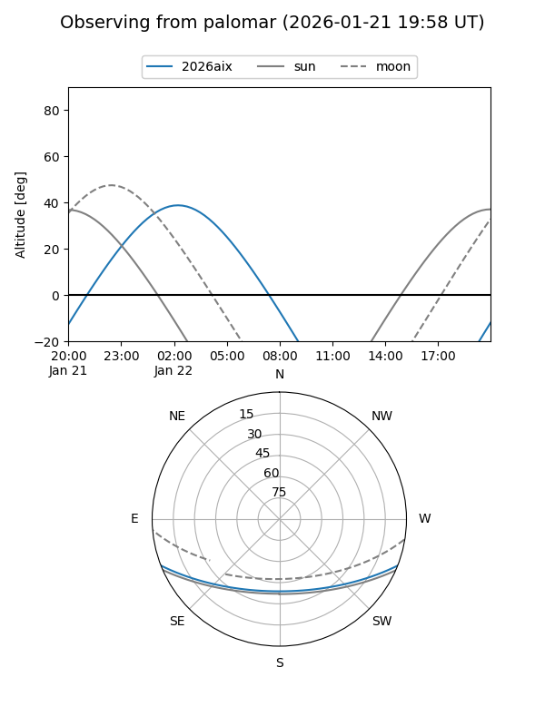
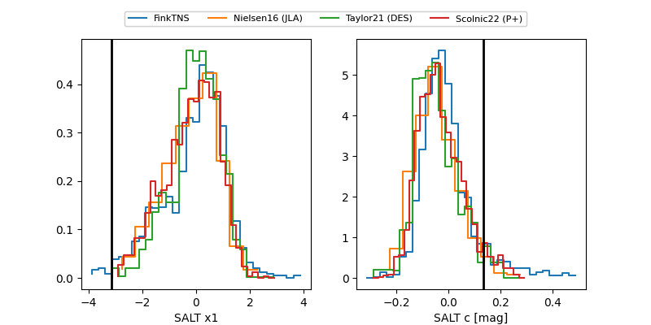

2026aix
Target 2026aix at 2026-01-20 04:01
Aliases and brokers:
FINK: link
Lasair: link
ALeRCE: link
TNS: link
YSE: link
alt names
ZTF26aaaxbqd (ztf,fink_ztf)
2026aix (tns,yse)
Coordinates:
equatorial (ra, dec) = 37.6599,-17.92023
equatorial (HMS+DMS) = 02:30:38.37,-17:55:12.82
galactic (l, b) = (196.1967,-65.36976)
Flags:
Photometry:
last ztfg=19.73, ztfr=18.97
1 ztfg, 2 ztfr detections
Lightcurve

Visibility


Additional plots
